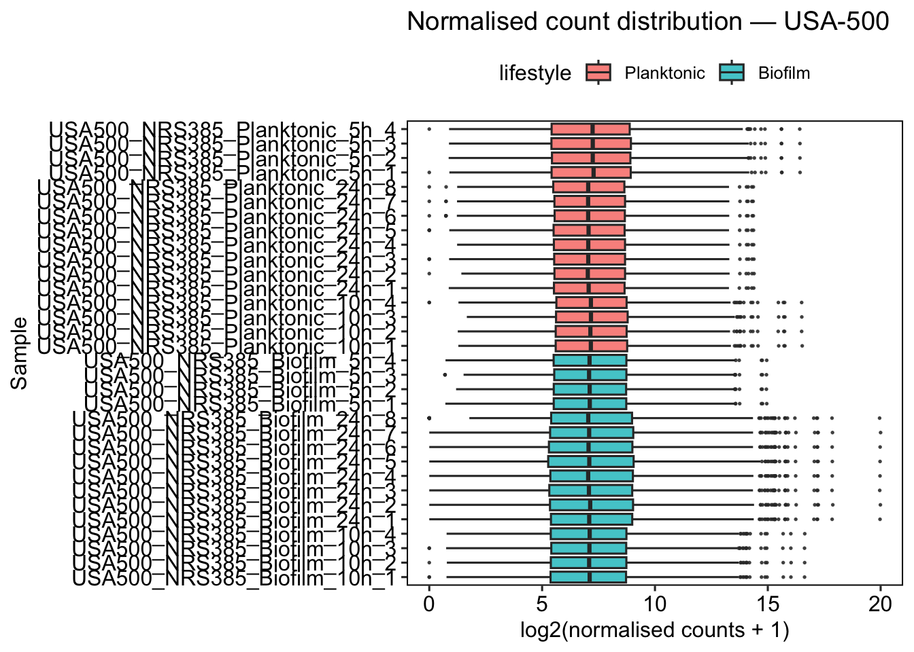
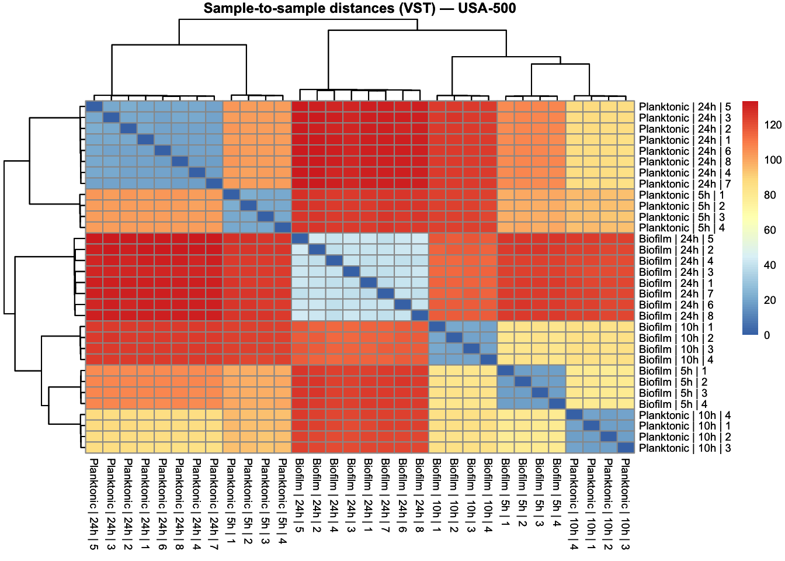
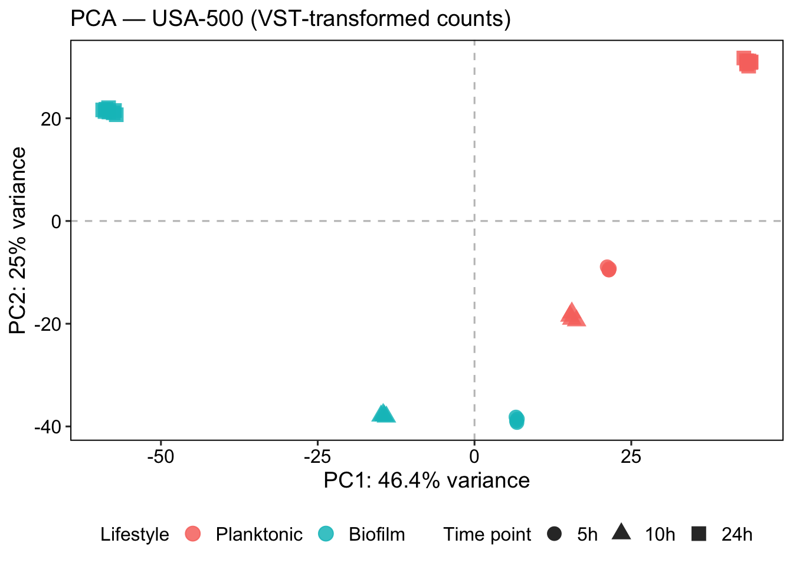
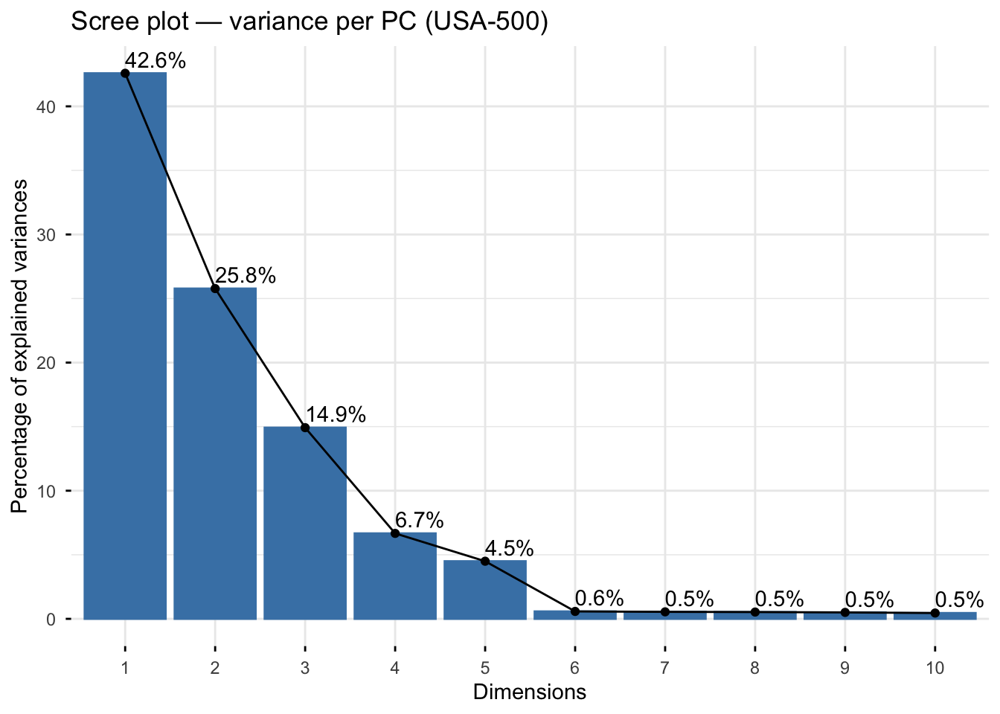
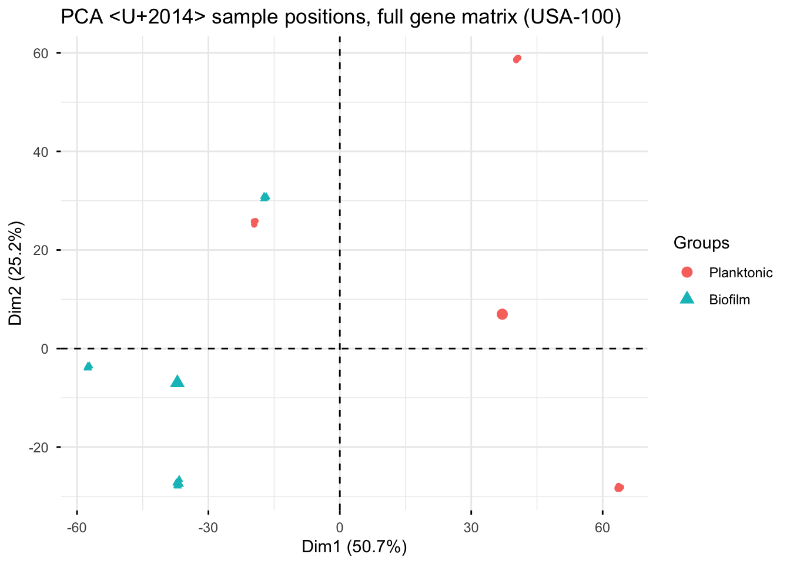
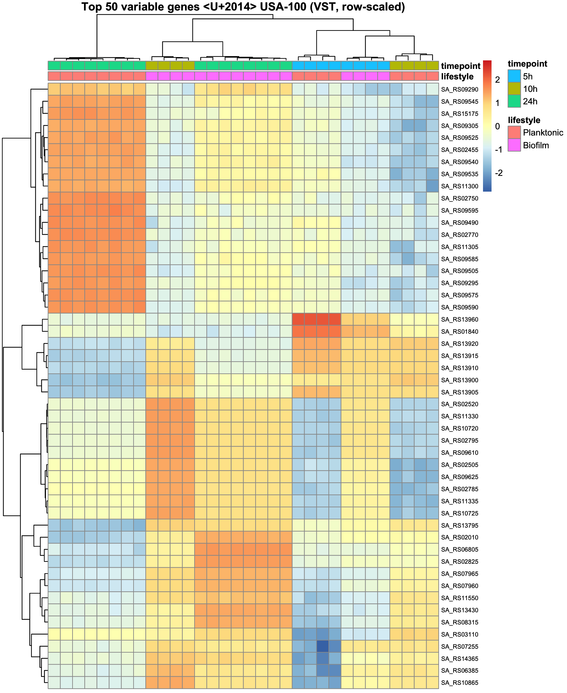

Exploratory Data Analysis
In this section we do not perform statistical tests. The goal is quality control: check count distributions, detect technical outliers, and confirm that samples cluster as expected — and, specifically for this dataset, to see how strongly time point structures the data.
Estimate Size Factors
Library sizes differ between samples due to technical variation in sequencing depth. DESeq2’s median-of-ratios normalisation corrects for this with a size factor per sample. Values close to 1.0 indicate balanced libraries; values far from 1.0 warrant investigation.
Code
| sample | size_factor |
|---|---|
| USA100_N315_Biofilm_10h_1 | 1.405 |
| USA100_N315_Biofilm_10h_2 | 1.379 |
| USA100_N315_Biofilm_10h_3 | 1.385 |
| USA100_N315_Biofilm_10h_4 | 1.354 |
| USA100_N315_Biofilm_24h_1 | 0.767 |
| USA100_N315_Biofilm_24h_2 | 0.772 |
| USA100_N315_Biofilm_24h_3 | 0.775 |
| USA100_N315_Biofilm_24h_4 | 0.832 |
| USA100_N315_Biofilm_24h_5 | 0.752 |
| USA100_N315_Biofilm_24h_6 | 0.850 |
| USA100_N315_Biofilm_24h_7 | 0.830 |
| USA100_N315_Biofilm_24h_8 | 0.816 |
| USA100_N315_Biofilm_5h_1 | 1.882 |
| USA100_N315_Biofilm_5h_2 | 1.881 |
| USA100_N315_Biofilm_5h_3 | 1.920 |
| USA100_N315_Biofilm_5h_4 | 1.854 |
| USA100_N315_Planktonic_10h_1 | 0.931 |
| USA100_N315_Planktonic_10h_2 | 0.914 |
| USA100_N315_Planktonic_10h_3 | 0.885 |
| USA100_N315_Planktonic_10h_4 | 0.915 |
| USA100_N315_Planktonic_24h_1 | 0.800 |
| USA100_N315_Planktonic_24h_2 | 0.818 |
| USA100_N315_Planktonic_24h_3 | 0.805 |
| USA100_N315_Planktonic_24h_4 | 0.804 |
| USA100_N315_Planktonic_24h_5 | 0.881 |
| USA100_N315_Planktonic_24h_6 | 0.871 |
| USA100_N315_Planktonic_24h_7 | 0.875 |
| USA100_N315_Planktonic_24h_8 | 0.855 |
| USA100_N315_Planktonic_5h_1 | 0.922 |
| USA100_N315_Planktonic_5h_2 | 0.921 |
| USA100_N315_Planktonic_5h_3 | 0.912 |
| USA100_N315_Planktonic_5h_4 | 0.961 |
Distribution of Normalised Counts
Boxplots of log2-normalised counts per sample check that all samples have comparable expression distributions. After normalisation, boxes should overlap substantially. A sample that is a clear outlier in median or spread may indicate a failed library or mislabelled sample.
📌 Remember: These normalised counts are for visualisation only. Always feed DESeq2 raw integer counts.
Code
normalized_counts <- counts(dds, normalized = TRUE)
counts_norm <- reshape2::melt(
normalized_counts,
varnames = c("gene_id", "sample"),
value.name = "counts"
)
counts_norm <- inner_join(
counts_norm,
as.data.frame(colData(dds)),
by = "sample"
)
dir.create(file.path(results_dir, "plots"), recursive = TRUE, showWarnings = FALSE)
distribution <- ggplot(counts_norm,
aes(x = sample,
y = log2(counts + 1),
fill = lifestyle)) +
geom_boxplot(outlier.size = 0.3, alpha = 0.8) +
coord_flip() +
theme_pubr(border = TRUE) +
xlab("Sample") +
ylab("log2(normalised counts + 1)") +
ggtitle(paste0("Normalised count distribution — ", strain))
distribution
Sample Correlation Heatmap
Euclidean distances between VST-transformed samples reveal how similar samples are to each other globally. Samples from the same lifestyle, or the same time point, may cluster together.
Variance-stabilising transformation (VST) is applied because raw or normalised counts have heteroscedastic variance (high-count genes have much larger absolute variance).
VST removes this mean–variance dependence, making distances meaningful across the full expression range (Anders & Huber, 2010).
With blind = TRUE, the VST is computed ignoring the experimental design. This is recommended for QC and exploratory analysis, where you want an unbiased view of sample similarity.
Use blind = FALSE only when the transformation is feeding into a model that already accounts for the design.
Code
sampleDists <- dist(t(assay(vsd)))
sampleDistMatrix <- as.matrix(sampleDists)
rownames(sampleDistMatrix) <- paste(vsd$lifestyle, vsd$timepoint, vsd$replicate, sep = " | ")
colnames(sampleDistMatrix) <- rownames(sampleDistMatrix)
heat <- pheatmap(
sampleDistMatrix,
main = paste0("Sample-to-sample distances (VST) — ", strain),
fontsize = 7
)
heat
Code
## quartz_off_screen
## 2The diagonal is always zero (a sample compared to itself). Dark = similar, light = distant. Look at whether samples group by lifestyle, by time point, or both. If time point is a strong driver of the distances, that is a signal that time must be part of the model rather than ignored — which is exactly why script 02 keeps time in its designs instead of pooling all samples into a plain biofilm-vs-planktonic comparison.
Principal Component Analysis (PCA)
PCA reduces the high-dimensional expression space (one dimension per gene) to a few principal components capturing the largest sources of variance. Here it answers two questions at once: does lifestyle (biofilm vs planktonic) separate the samples, and how much of the structure is driven by time point?
Code
pca_data <- plotPCA(vsd,
intgroup = c("lifestyle", "timepoint"),
returnData = TRUE)
pct_var <- round(100 * attr(pca_data, "percentVar"), 1)
PCAPlot <- ggplot(pca_data, aes(x = PC1,
y = PC2,
color = lifestyle,
shape = timepoint)) +
geom_point(size = 4, alpha = 0.85) +
geom_hline(yintercept = 0, linetype = "dashed", alpha = 0.3) +
geom_vline(xintercept = 0, linetype = "dashed", alpha = 0.3) +
theme_pubr(border = TRUE) +
theme(
axis.text = element_text(size = 12),
axis.title = element_text(size = 14),
legend.text = element_text(size = 12),
legend.position = "bottom"
) +
labs(
x = paste0("PC1: ", pct_var[1], "% variance"),
y = paste0("PC2: ", pct_var[2], "% variance"),
title = paste0("PCA — ", strain, " (VST-transformed counts)"),
color = "Lifestyle",
shape = "Time point"
)
PCAPlot
Code
⭐ How to read this plot. Each point is one sample; samples that are close have similar overall expression. Check the % variance printed on each axis first — it tells you how much of the story that axis carries. Then look at which axis separates lifestyle (colour) and which separates time point (shape). The paper reports that the biofilm–planktonic difference grows with culture age, strongest at 24 h — read the actual separation off your plot rather than assuming it. Script 02 builds directly on this structure: it models change over time and lifestyle adjusted for time, and saves the plain two-group comparison for a single, well-replicated time point (24 h) at the very end.
Detecting Outliers
The PCA above uses only the top 500 most variable genes (DESeq2 default). Here we run PCA on the full VST matrix and inspect a scree plot and biplot to assess whether any single sample drives an unusual amount of variance, a common sign of a technical outlier.
Code

Code

Code
What to look for: an isolated sample sitting far from every other point on the individuals plot — especially along a PC that the scree plot shows carrying a large share of the variance — is a candidate technical outlier. Investigate its library size and its MultiQC metrics before deciding whether to exclude it.
Top Variable Genes Heatmap
Clustering the 50 most variable genes across samples gives a gene-level view of the structure in the data. Row-scaling (z-score per gene) is applied so that highly expressed genes do not visually dominate.
Code
topVarGenes <- head(order(rowVars(assay(vsd)), decreasing = TRUE), 50)
df_anno <- as.data.frame(colData(vsd)[, c("lifestyle", "timepoint"), drop = FALSE])
heat_plot <- pheatmap(
assay(vsd)[topVarGenes, ],
cluster_cols = TRUE,
cluster_rows = TRUE,
scale = "row",
clustering_distance_rows = "euclidean",
clustering_distance_cols = "euclidean",
annotation_col = df_anno,
show_colnames = FALSE,
show_rownames = TRUE,
fontsize_row = 7,
main = paste0("Top 50 variable genes — ", strain, " (VST, row-scaled)")
)
heat_plot
Code
## quartz_off_screen
## 2📘 Note: Rows are locus tags (this prokaryotic reference has no gene symbols). They are the same identifiers KEGG uses, so they can be carried directly into the enrichment analysis with no conversion step.
How to read this heatmap:
- Each row is a gene, each column is a sample
- Colours show the z-score (row-scaled expression) — red = higher than average for that gene, blue = lower
- The dendrograms show hierarchical clustering — samples/genes that behave similarly are grouped together
What to look for:
- Clear colour blocks by lifestyle → biofilm vs planktonic has a strong, consistent transcriptional effect
- Whether samples split by time point first (a sign the time points are very different states)